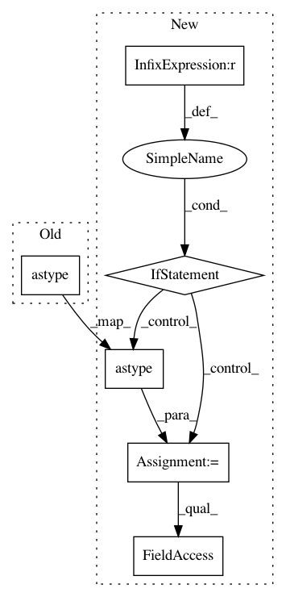

b89d864ba91813f3ccce46134fd7eec49a7501ed,librosa/util/_nnls.py,,nnls,#,141
Before Change
rho = 0.5 * svds.max() * svds.min()
// Cast up to float64 because numba isn"t smart about typing
return _nnls(A.astype(np.float64),
B.astype(np.float64),
rho=rho,
eps_abs=eps_abs,
After Change
if B.ndim == 1:
return scipy.optimize.nnls(A, B)[0]
if B.size > A.size:
A = A.astype(B.dtype)
elif B.size < A.size:
B = B.astype(A.dtype)
// Otherwise, initialize our step size
svds = np.linalg.svd(A, compute_uv=False)
// Explicitly cast to float so that numba isn"t confused
rho = np.asanyarray(0.5 * svds.max() * svds.min(), dtype=A.dtype)
return _nnls(A, B,
rho=rho,
In pattern: SUPERPATTERN
Frequency: 3
Non-data size: 6
Instances
Project Name: librosa/librosa
Commit Name: b89d864ba91813f3ccce46134fd7eec49a7501ed
Time: 2019-04-28
Author: brian.mcfee@nyu.edu
File Name: librosa/util/_nnls.py
Class Name:
Method Name: nnls
Project Name: librosa/librosa
Commit Name: a4100f17a0433eda78a6cf393f08f9a8d9b46fdb
Time: 2019-06-21
Author: brian.mcfee@nyu.edu
File Name: librosa/util/_nnls.py
Class Name:
Method Name: nnls
Project Name: keunwoochoi/kapre
Commit Name: 8cdbb1637b140c01f431831e7b2c2a63afc96209
Time: 2020-08-14
Author: gnuchoi+github@gmail.com
File Name: kapre/backend.py
Class Name:
Method Name: filterbank_log